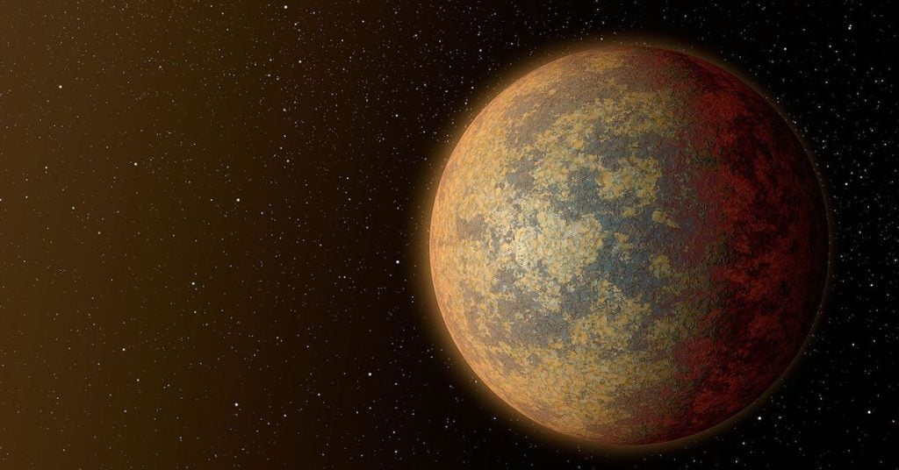
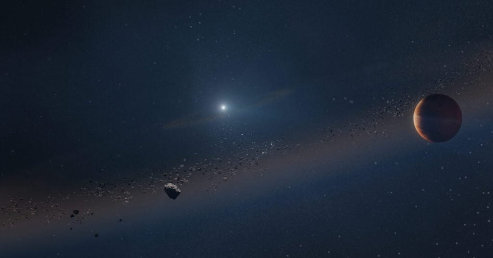
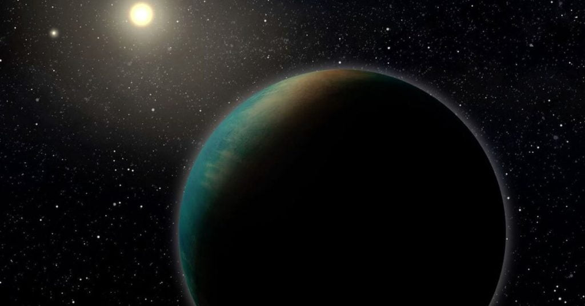

အခုထိဆို အတည်ပြု နိုင်တဲ့ ပြင်ပဂြိုဟ် အရေအတွက်ဟာ အလုံး ၅,၂၇၂ လုံး ရှိသွားပြီ ဖြစ်ပါတယ်။ ဒီ အရေအတွက်ဟာလဲ နေ့စဉ်နှင့် အမျှ တိုးပွားလို့ လာနေပါတယ်။
တချိန်ထဲ မှာပဲ နောက်ထပ် မျိုးဆက်သစ် တယ်လီစကုပ် ကြီးတွေ၊ ရောင်စဉ်တိုင်းစက် (Spectrometers) မျိုးဆက်သစ် တွေနဲ့ ပုံရိပ်ဖမ်း (ဓါတ်ပုံရိုက်) အဆင့်မြင့် နည်းပညာ သစ်တွေ (advanced imaging techniques) ရဲ့ အကူအညီကို အသုံးပြုပြီး ဒီ ပြင်ပဂြိုဟ် တွေရဲ့ လေထုကိုပါ ပညာရှင်တွေ လေ့လာခွင့် ရရှိနေ ကြပြီ ဖြစ်ပါတယ်။
တနည်း ပြောရရင် ယခုလက်ရှိ ပြင်ပဂြိုဟ် ရှာဖွေ လေ့လာရေး သုတေသနဟာ ပြင်ပဂြိုဟ် သစ်တွေ ရှာဖွေတာ တခုထဲ မဟုတ်တော့ပဲ ဒီ ရှာဖွေ တွေ့ရှိလာ ခဲ့တဲ့ ပြင်ပဂြိုဟ် တွေနဲ့ သက်ဆိုင်တဲ့ အချက်အလက်တွေကို အသေးစိတ် လေ့လာတဲ့ အဆင့်အထိ တက်လှမ်းလို့ လာခဲ့ပြီ ဖြစ်ပါတယ်။
ဆက်စပ်ဆောင်းပါး – ပြင်ပဂြိုဟ်ရဲ့ လေထုကို ဂျိမ်စ်ဝက်ဘ် က လှစ်ပြလိုက်ပြီ
ဒီ ပြင်ပဂြိုဟ် တွေအနက်မှာ ကမ္ဘာနဲ့ အလားသဏ္ဍာန် တူတဲ့ ကျောက်သား ဂြိုဟ်တွေ ရှိကြပါတယ်။ ဒီ ကမ္ဘာတူ ဂြိုဟ် (Earth like planets) တွေအနက် သက်ရှိတွေ အသက်ရှင်သန် ပေါက်ပွားနိုင်ဖို့ အခွင့်အလမ်း ရှိတဲ့ habitable planets တွေ ရှာဖွေရေး ဟာလဲ အရေးပါတဲ့ လုပ်ငန်းစဉ် တစ်ရပ် ဖြစ်ပါတယ်။
နိုင်ငံတကာက သုတေသန အဖွဲ့တွေနဲ့ ထိပ်တန်း တက္ကသိုလ် တွေက ပညာရှင်တွေ ပါဝင် ဖွဲ့စည်းထားတဲ့ CARMENES သုတေသန စီမံကိန်းဟာ ဒီ အသက်ရှင်သန်နိုင်စွမ်းသော ဂြိုဟ်များ (Habitable planets) ရှာဖွေရေး အတွက် အဓိက ရည်ရွယ်ချက်နဲ့ ဖွဲ့စည်းထားတဲ့ စီမံကိန်း ဖြစ်ပါတယ်။ ဒီ စီမံကိန်း ကနေ ၂၀၁၆ မှ ၂၀၂၀ အတွင်း လေ့လာခဲ့တဲ့ လေ့လာမှု အခု ၂၀,၀၀၀ ရဲ့ ရလဒ်ကို Astronomy & Astrophysics သုတေသန ဂျာနယ်မှာ တင်ပြ လိုက်ပါတယ်။

ဒီ ကြယ်နီပု ၃၆၂ စင်း ကို လေ့လာမှုကနေ ဂြိုဟ်အသစ် ၅၉ လုံးကို ရှာဖွေ တွေ့ရှိခဲ့ကြောင်း သုတေသန စာတမ်းမှာ တင်ပြ ထားပါတယ်။ ဒီ ဂြိုဟ်သစ် ၅၉ လုံး အနက် အချို့က လုံးဝ အသစ် တွေ့ရှိချက်တွေ ဖြစ်ပြီး အချို့ကတော့ ယခင် ဂြိုဟ်လို့ သံသယ ရှိခဲ့တဲ့ တွေ့ရှိမှု တွေကို အတည်ပြု ပေးထားတာ ဖြစ်ပါတယ်။
ဆက်စပ်ဆောင်းပါး – ဂျိမ်းစ်ဝက်ဘ် က ပြင်ပဂြိုဟ်ရဲ့ လေထုထဲမှာ ကာဗွန်ဒိုင်အောက်ဆိုဒ် ရှာတွေ့
ဒီ စီမံကိန်း အတွက် အသုံးပြုတဲ့ တယ်လီစကုပ် ကြီးဟာ အချင်း ၃.၅ မီတာရှိပြီး စပိန်နိုင်ငံ Calar Alto Observatory နက္ခတ်မျှော်စင်ကြီးမှာ တပ်ဆင်ထားတာ ဖြစ်ပါတယ်။ ဒီ တယ်လီစကုပ် ကြီးမှာ မျက်မြင် အလင်း နဲ့ အနီအောက် ရောင်ခြည်တွေကို ဖမ်းယူနိုင်တဲ့ ကိရိယာတွေ တပ်ဆင် ထားပါတယ်။ ဒီ ကိရိယာ တွေကို အသုံးပြုပြီး ကြယ်တွေရဲ့ ပတ်လည်မှာ ပတ်နေတဲ့ ဂြိုဟ်တွေကို ရှာဖွေတာ ဖြစ်ပါတယ်။
ဒီ သုတေသန စီမံကိန်းမှာ ပြင်ပဂြိုဟ် တွေကို Radial Velocity Method ကို အသုံးပြုပြီး ရှာဖွေပါတယ်။ ဒီနည်းက ကြယ်တစ်စင်းကို ပတ်နေတဲ့ ဂြိုဟ်ရှိရင် ဒီ ကြယ်က လာတဲ့ အလင်းရဲ့ အရောင် ပြောင်းသွားတဲ့ သဘော သဘာဝကို အသုံးပြုပြီး ရှာဖွေတာ ဖြစ်ပါတယ်။

ဒီနည်းနဲ့ ရှာဖွေတဲ့ အတွက် နောက်ထပ် ရလာတဲ့ အကျိုးကတော့ ဂြိုဟ်ရဲ့ ဒြပ်ထု (mass) ကိုပါ အတိအကျ တွက်ချက်နိုင်တာပဲ ဖြစ်ပါတယ်။
ဆက်စပ်ဆောင်းပါး – ကမ္ဘာနဲ့ အရွယ်တူ ဂြိုဟ်တစ်စင်း ရှာတွေ့
ဒီ CARMENES စီမံကိန်းမှာ စပိန် နဲ့ ဂျာမနီက ထိပ်တန်း သုတေသန အဖွဲ့အစည်းပေါင်း ၁၁ ဖွဲ့ ပူးပေါင်း ပါဝင် ထားကြပါတယ်။ ဒီအထဲမှာ ထင်ရှားတဲ့ အဖွဲ့က ဂျာမနီ နိုင်ငံက Max-Planck Institute လို အဖွဲ့လဲ အပါအဝင် ဖြစ်ပါတယ်။
၂၀၁၅ မှာ စတင်တဲ့ ဒီ စီမံကိန်းဟာ နေနဲ့ မလှမ်းမကမ်း မှာ ရှိတဲ့ ကြယ်နီပု (Red dwarf stars) တွေကို ပတ်နေတဲ့ ကျောက်သား ဂြိုဟ်တွေကို ရှာဖွေဖို့ ရည်ရွယ်ချက်နဲ့ စတင်ခဲ့တာ ဖြစ်ပါတယ်။ အခု အသစ် ရှာဖွေ တွေ့ရှိခဲ့တဲ့ ဂြိုဟ်သစ် ၅၉ စင်းအနက် ၆ စင်းဟာ ဂျူပီတာ ဂြိုဟ်လို ဓါတ်ငွေ့လုံး ဂြိုဟ်ကြီးတွေ ဖြစ်ကြပါတယ်။ ၁၀ စင်းကတော့ နက်ပ်ကျွန်းဂြိုဟ်လို ဓါတ်ငွေ့ဂြိုဟ် တွေ ဖြစ်ပြီး ကျန် ၄၃ စင်း ကတော့ ကမ္ဘာလို ကျောက်သားဂြိုဟ်တွေ ဖြစ်ကြပါတယ်။
ဒီ ကျောက်သားဂြိုဟ် ၄၃ စင်း အနက် ၁၂ စင်း ခန့်ဟာ မိခင်ကြယ်ရဲ့ သက်ရှင်သန်နိုင်ရာ ရပ်ဝန်း (Habitable zone) အတွင်းမှာ လည်ပတ် နေကြတာကိုလဲ ရှာဖွေ တွေ့ရှိ ခဲ့ကြပါတယ်။
ဒီ ဂြိုဟ်သစ် ၅၉ စင်း အပြင် ယခင် တွေ့ရှိ ခဲ့ပြီးတဲ့ ဂြိုဟ်ဟောင်း ၁၇ လုံးကိုလဲ အသေးစိတ် လေ့လာ စူးစမ်းမှုတွေ ပြုလုပ်ခဲ့ ကြပါတယ်။
ဆက်စပ်ဆောင်းပါး – သမုဒ္ဒရာရေတွေ ဖုံးလွှမ်းနေတဲ့ ဂြိုဟ်တစင်း ရှာတွေ့
ဒီလို ကြယ်တစ်စင်းရဲ့ ပတ်လည်မှာ ဂြိုဟ်ရှိမရှိ ရှာဖွေရာမှာ ဒီ ကြယ်ကို အနည်းဆုံး အကြိမ်ရေ ၅၀ လေ့လာမှု ပြုလုပ် ခဲ့ရပါတယ်။ အချို့ ကြယ်တွေကိုတော့ ဒီထက် ပိုပြီး အကြိမ်ရေ များများ လေ့လာမှု ပြုခဲ့ ကြပါတယ်။ ဒီလို လေ့လာရာမှာ မတူညီတဲ့ အချိန်ကာလတွေ မှာ လေ့လာ ခဲ့ကြတာ ဖြစ်ပါတယ်။
ဒီရရှိလာတဲ့ အချက်အလက် တွေကို အသေးစိတ်လေ့လာမှုရဲ့ ရလဒ်တွေကို အခုသုတေသန စာတမ်းမှာ တင်ပြထားတာ ဖြစ်ပါတယ်။ ဒီလို တင်ပြခဲ့ ပေမယ့် ပြင်ပဂြိုဟ်သစ် ရှာဖွေမှု စီမံကိန်း ကတော့ ရပ်တန့်သွားခြင်း မရှိပဲ ဆက်လက် လုပ်ဆောင်နေဆဲ ဖြစ်တယ်လို့ သိရပါတယ်။

ဒီလို အသစ်ရှာဖွေ ပေးနိုင်ရုံ မကပါဘူး၊ ဒီ စီမံကိန်း ကနေ ပြင်ပဂြိုဟ် တွေရဲ့ လေထုနဲ့ သက်ဆိုင်တဲ့ အချက်အလက် အများအပြား ကိုလဲ ရှာဖွေ ပေးနိုင် ခဲ့ပါတယ်။ ဒီ အချက်အလက် တွေဟာ များလွန်းလို့ ပညာရှင်တွေ ယခုအထိ အသေးစိတ် ခွဲခြမ်း စိတ်ဖြာ သုတေသန ပြုလို့ မပြီးသေး ပါဘူး။
ဆက်စပ်ဆောင်းပါး – စကြာဝဠာ အတွင်း ဂြိုဟ်ပေါင်း ၅,၀၀၀ ကျော် ရှာတွေ့ထားပြီ
နောက်တဆင့် အနေနဲ့ ၂၀၂၁ ခုနှစ်ကနေ ၂၀၁၃ ခုနှစ်အတွင်း စီမံကိန်း ဒုတိယ အဆင့်ဖြစ်တဲ့ CARMENES Legacy-Plus စီမံကိန်းကို စတင် နေပြီ ဖြစ်ပါတယ်။ ဒီ စီမံကိန်း မှာတော့ ယခင် လေ့လာပြီး ခဲ့တဲ့ ကြယ်တွေကို ပဲ အသေးစိတ် ဒုတိယ အကြော့ လေ့လာမှု ပြုလုပ်သွားမယ်လို့ သိရပါတယ်။
ဒီ CARMENES စီမံကိန်းရဲ့ ရေရှည် ရေမှန်းချက် ကတော့ M-type ကြယ်တွေကို သက်ရှင်သန်နိုင်သော ရပ်ဝန်း (Habitable zone) အတွင်းကနေ ပတ်နေတဲ့ ကမ္ဘာနဲ့ တူတဲ့ ပြင်ပဂြိုဟ်ပေါင်း ၂ သန်းအထိ ရှာဖွေ သွားဖို့ ရည်ရွယ်ထားပါတယ်။ ဒီ ရည်မှန်းချက် ပြည့်မှီဖို့ ဆိုတာကတော့ အချိန် ဆယ်စုနှစ် များစွာ ကြာမြင့်မှာ ဖြစ်ပါတယ်။
Ref: 59 New Planets Discovered in Our Neighborhood | Universe Today